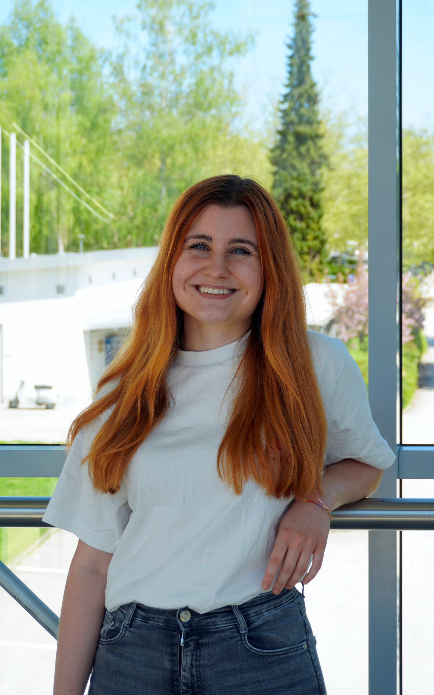

I am a project assistant and PhD student in the Software Engineering Group (SERG) at the University of Klagenfurt. I received my MSc with distinction from the University of Klagenfurt in 2025 and my BSc from the TU Graz in 2023. My research focusses on build systems, change impact analysis, machine learning, and empirical studies in software engineering.
